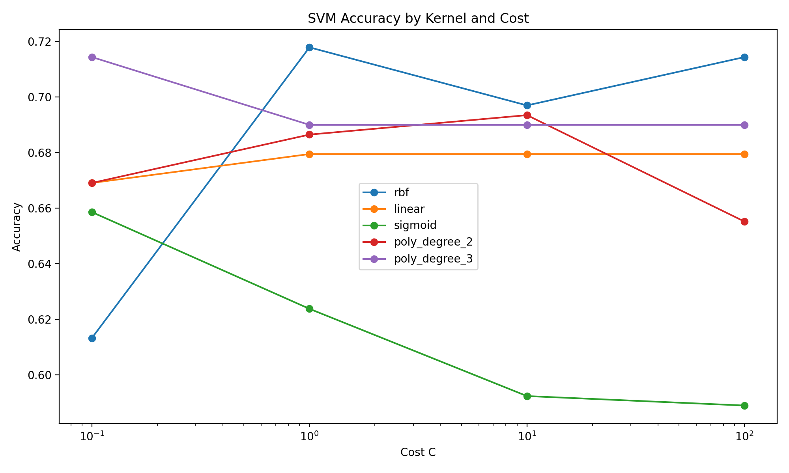
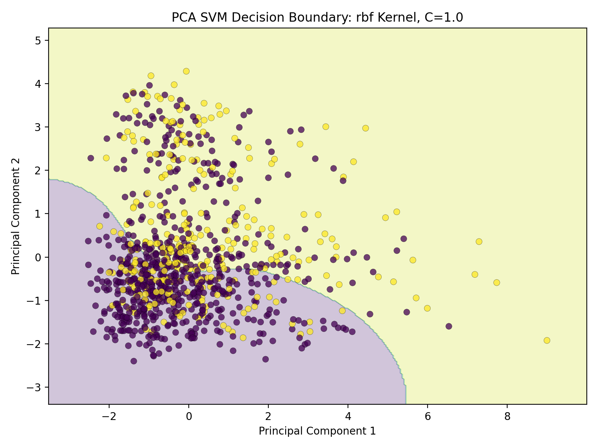
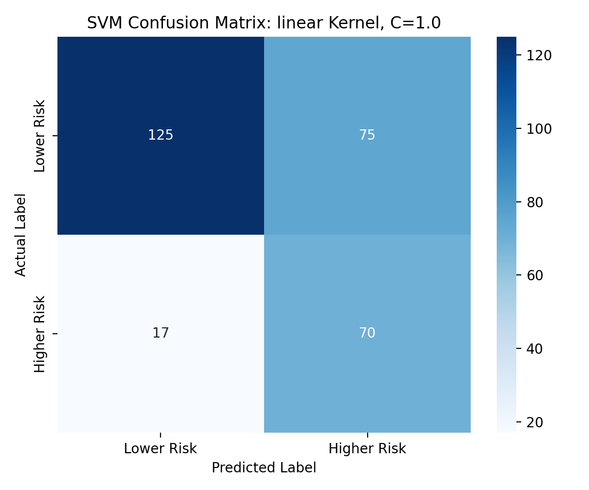

CS 432 Project Journal
Module 8 - Supervised Learning, Support Vector Machines
Searching across kernels and cost settings for the boundary that best separates lower from higher risk borrowers.
Drawing the widest possible line
A support vector machine goes after a slightly different goal than the earlier classifiers. Instead of estimating a probability, it tries to draw the boundary that separates the two groups with the widest possible gap on either side, leaning on the borderline records, the support vectors, to decide where that boundary sits. When the groups will not separate with a straight line, it can use a kernel to bend the boundary into curves, which is the clever trick that gives the method its range. I kept working with the German Credit data and its lower and higher risk label, with all 24 predictors standardized, since an SVM is sensitive to scale in the same way KMeans was.
Before fitting anything I plotted the borrowers in two PCA dimensions just to see how tangled they were, and they were thoroughly tangled, with lower and higher risk records sitting right on top of each other rather than in tidy halves. That picture told me a single straight line was unlikely to do the job and that it was worth testing curved boundaries, which is exactly what the kernels are for. The data was setting up the experiment for me.
The grid I searched
To find a good boundary I swept across five kernels and four cost settings and trained every combination. The kernels were linear, a degree two and a degree three polynomial, the flexible RBF, and sigmoid, which range from a plain straight cut through gentle curves to highly contoured shapes. The cost settings of 0.1, 1, 10, and 100 control how much the model tolerates mistakes near the boundary. A low cost lets the model keep a wide, forgiving margin even if a few points fall on the wrong side, while a high cost forces a tighter boundary that bends to fit the training points more closely and risks overfitting. With 667 borrowers for training and 287 held back for testing, that gave me a full grid of behaviors to compare.
What came out on top
The best overall model was the RBF kernel at a cost of 1, reaching about 72 percent accuracy with an F1 score near 0.61, which matched the strongest results I had seen from any single classifier so far. The straight line linear kernel was no slouch either, landing close behind on accuracy while posting a high recall above 80 percent, and the sigmoid kernel at the lowest cost posted the highest recall of all at roughly 82 percent, though its overall accuracy slipped. The polynomial kernels sat in between without standing out.
The accuracy by cost chart showed each kernel had its own temperament. RBF jumped sharply from the lowest cost up to a cost of 1 and then leveled off, the linear kernel stayed remarkably steady once cost reached 1 and held flat through 100, and the sigmoid kernel actually got worse as cost climbed. The clear takeaway was that a moderate cost did the best work, and cranking the penalty higher mostly bought tighter fits without better results. That is a tidy reminder that more aggressive is not the same as better.


Boundaries, support vectors, and a familiar signal
Drawing each kernel's boundary over the PCA view made their personalities visible. The linear kernel cut a straight diagonal, the polynomials curved, the RBF wrapped itself flexibly around pockets of borrowers, and the sigmoid drew an aggressive shape that caught more risky borrowers while also flagging more good ones, which is why its recall ran high and its accuracy did not. The number of support vectors each model needed tracked that complexity, from 448 for the degree three polynomial up to 567 for sigmoid, with RBF at 502. More support vectors means the model needed more borderline cases to pin down its boundary.
Because the linear kernel keeps readable coefficients, I leaned on it to ask which features pushed hardest, and the answer rhymed with everything before it. An unknown checking account towered over the rest with a weight around 0.81, trailed by unknown savings, loan duration, richer savings, home ownership, and sex. Its confusion matrix correctly cleared 125 lower risk borrowers and caught 70 of the higher risk ones while missing only 17. So the SVM landed in the same place the tree and the logistic model had, with account status and loan duration leading the way, and it earned its spot as one of the better performing models in the whole project.
